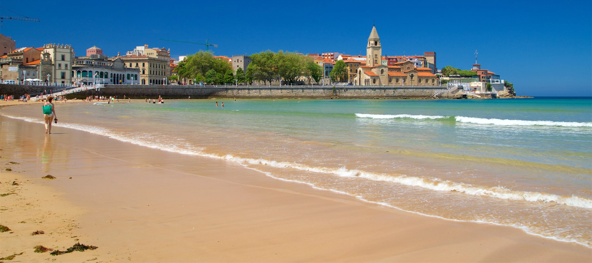

Gijón, España
Gijón es una ciudad costera situada en el Principado de Asturias, en el norte de España. Es conocida por su arquitectura modernista, playas y parques. El centro de la ciudad está marcado por la Torre del Reloj, una estructura del siglo XIX. En el puerto, el Museo del Ferrocarril de Asturias alberga trenes históricos. El Museo Casa Natal de Jovellanos, en el casco antiguo, muestra la vida del escritor y político local Gaspar Melchor de Jovellanos. El Acuario de Gijón tiene tiburones y focas.
